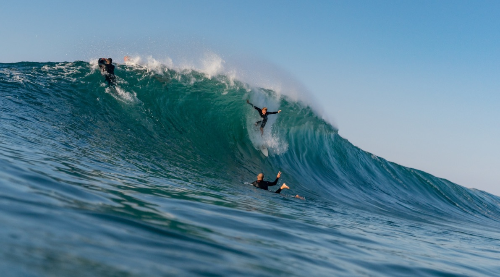
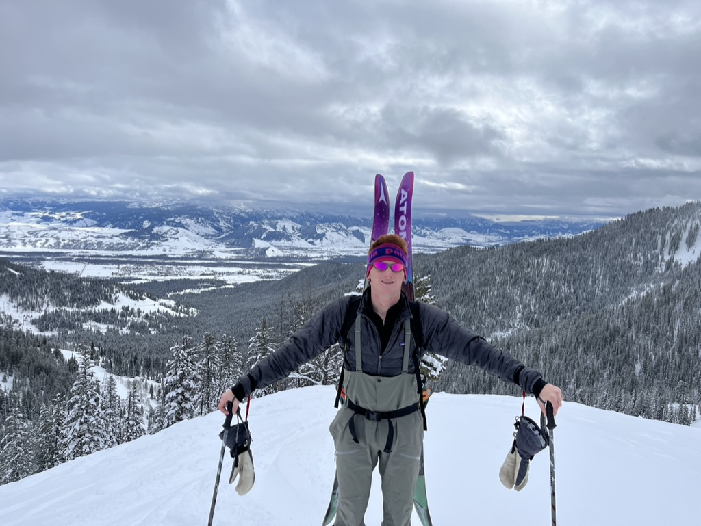
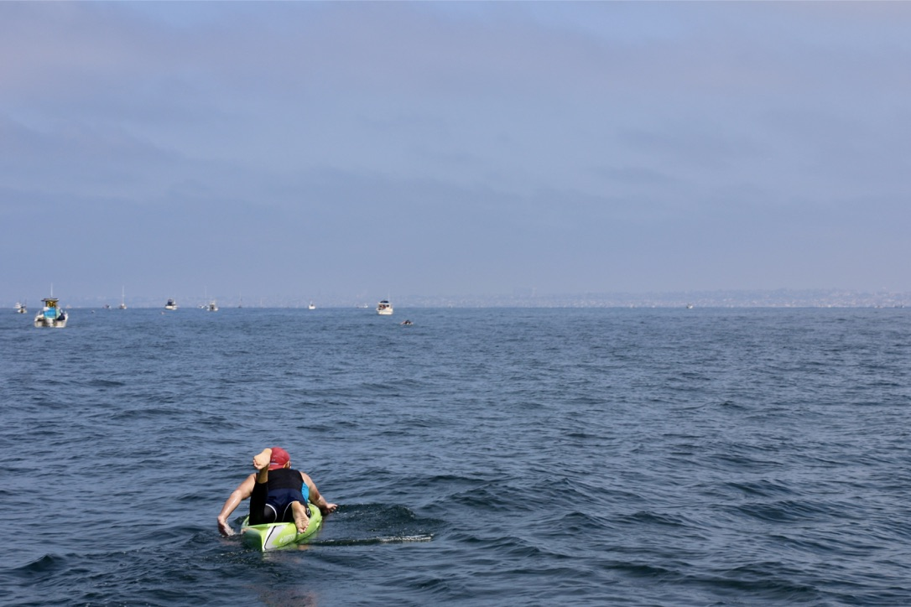

Home | Surfing | Skiing | Paddling | My Resume
My Fun
Surfing

Surfing has played a huge role in my life. It is what started my love for the outdoors and the ocean. My Dad got me on a baord at age three and since then I've hooked. Check out the surfing tab to learn more about my favorite spots and surfing adventures.
Skiing

Skiing more recently has become a favortie hobby of mine as I have been attending college here in Utah. It is a great way to get out into nature and enjoy Gods beautiful creations. Check out the skiing tab to learn more about my favorite resorts and skiing experiences.
Paddling

Paddling has been more of a competative hobby for me and has motivated me to push my limits as I competed in many different paddle board races. Learn more about my paddling journey through the Paddlling tab.